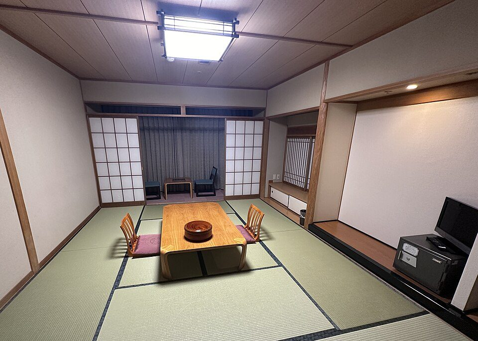

定年退職を迎えた親へのプレゼント：いまの定年の実態、親世代が喜ぶこと、相場とマナー
要点まとめ
親が定年を迎えると、これまでの感謝を何かの形で伝えたくなります。ただ、いまは60歳で定年を迎えても、65歳までは同じ会社などで働ける仕組みが企業に義務付けられていて[2]、定年の日が仕事を辞める日とは限りません。この記事では、贈り物を考える材料として、いまの定年の実態、親世代が喜びを感じること、のし・表書きのマナー、お金を贈るときの税金、旅行を贈るときの割引、退職後の手続きを、国の統計・法令と公式の説明でまとめました。商品のランキングではなく、選ぶときの考え方を中心にしています。
いまの定年：60歳が多く、65歳までは働ける
定年を60歳とする企業は62.2%
65歳以上が定年（廃止を含む）の企業は34.9%
厚生労働省の令和7年「高年齢者雇用状況等報告」（2025年6月1日現在、常時雇用する労働者が21人以上の企業237,739社）では、定年を60歳とする企業が62.2%、65歳とする企業が27.2%、定年制を廃止している企業が3.9%でした[1]。65歳以上を定年とする企業（廃止を含む）は34.9%で、前の年より2.3ポイント増えています[1]。
60歳を過ぎても、多くは働き続けられる
65歳までの雇用確保は、企業の義務
高年齢者雇用安定法は、定年を60歳より下にすることを認めていません（第8条）[2]。さらに、65歳未満を定年とする企業に、定年の引上げ、継続雇用制度（希望する人を定年後も引き続き雇う制度）の導入、定年制の廃止のどれかを義務付けています（第9条）[2][1]。65歳までの雇用確保措置を実施済みの企業は99.9%で、そのうち65.1%が継続雇用制度、31.0%が定年の引上げによるものでした[1]。
60代前半の4人に3人が働いている
60〜64歳の就業率は74.9%（2025年）
総務省の労働力調査では、2025年平均の就業率（人口に占める働いている人の割合）は、60〜64歳で74.9%、65〜69歳で54.5%でした[3]。男性に限ると、60〜64歳の84.1%が働いています[6]。一方、役員を除く男性の雇用者に占める非正規の職員・従業員の比率は、55〜59歳の10.5%から、60〜64歳で39.8%、65〜69歳で64.9%に上がります[6]。定年を境に、働き続けていても契約の形が変わる人が多いと考えられます。
見方: 濃い帯は企業の義務、点線の帯は努力義務の期間です[2]。老齢厚生年金は原則65歳から受け取れます（生年月日によっては、65歳より前に「特別支給の老齢厚生年金」があります）[7]。60歳以降の賃金が60歳時点の75%未満に下がって働き続けるときは、雇用保険の高年齢雇用継続給付の対象になります[8]。65歳以上で離職したときの雇用保険の給付は、一時金の高年齢求職者給付金です[9]。65歳以上の就業者数は、22年連続で前の年を上回っています[6]。
70歳までは「努力義務」
70歳までの就業確保を実施済みの企業は34.8%
2021年4月1日に施行された改正法で、65歳から70歳までの就業機会を確保することが企業の努力義務になりました[10][2]。方法は、定年制の廃止、定年の引上げ、継続雇用制度のほか、業務委託契約を結ぶ制度や、社会貢献事業に従事できる制度も認められています[1]。70歳までの定年の引上げを義務付けるものではありません[10]。2025年6月1日現在、実施済みの企業は34.8%でした[1]。
公務員の定年は、段階的に65歳へ
国家公務員は、2031年度から65歳定年に
高年齢者雇用安定法の定年や雇用確保の規定は、国家公務員と地方公務員には適用されません[2]。国家公務員の定年は、2023年4月1日に施行された法改正で、2023年度（令和5年度）から2年に1歳ずつ引き上げられ、2031年度（令和13年度）から65歳になります[11]。人事院の資料には、2026年度末（2027年3月31日）に62歳で定年退職する例が出てきます[11]。
親の定年のまわりで、最近変わったことを並べました。
- 2021年4月1日
70歳までの就業確保が、企業の努力義務に
- 2023年4月1日
国家公務員の定年の段階的な引上げが始まる
2年に1歳ずつ、2031年度に65歳[11]
- 2025年3月31日
継続雇用の対象者を限定できる経過措置が終了
2025年度からは希望者全員が65歳まで[1]
- 2025年4月1日
この日以降に60歳になった人は、高年齢雇用継続給付が最大10%に
それより前に60歳になった人は、最大で賃金の15%相当[8]
- 2026年4月
働きながら年金を受け取るときの基準額が、月51万円から65万円に
賃金と老齢厚生年金の合計がこれを超えると年金が減る[12]
いつ、どう祝うか：「定年＝引退」とは限らない
百貨店も「定年＝リタイヤとは限らない」と説明
相手のこれからに合わせた品を、という説明
高島屋の贈答マナーの説明は、最近は定年がリタイヤとは限らず、定年後に別の所で仕事をしたり新しく事業を始めたりする人もいるので、贈る相手に合わせた品物を贈るように、としています[13]。内閣府の国際比較調査（2025年度）では、日本の65歳以上の39.0%が「収入を伴う仕事をしたい（続けたい）」と答えていて、アメリカの24.3%、ドイツの19.8%、スウェーデンの19.1%より高くなっています[4]。
還暦のお祝いと重なることも
いまは古希から本格的に祝うことも増えたという説明も
松坂屋名古屋店の説明では、昔は数え年61歳の還暦を盛大に祝いましたが、今は61歳でも現役で活躍している人が多く、70歳の古希から本格的に祝うことも増えている、としています[14]。
祝う日と言葉を、親の予定に合わせる
「定年の日」と「仕事を終える日」は別のことがある
筆者の提案: まず、定年後も働く予定かどうかを、親に聞いておくと選びやすくなります。働き続ける親には、定年の日は「長い間おつかれさまでした」と区切りを祝う日にして、旅行など時間を使う贈り物は、再雇用などを終えて仕事から離れるときに回す、という分け方もできます。「これからはゆっくり休んで」のような言葉は、働き続ける親には合わないことがあります。
親世代が喜びを感じること
内閣府の「高齢者の生活と意識に関する国際比較調査」（令和7年度、第10回）は、日本・アメリカ・ドイツ・スウェーデンの60歳以上を対象に、2025年9月中旬〜11月上旬に行われました。日本の有効回答は1,524人です。令和8年版高齢社会白書は、このうち65歳以上（日本は1,267人）の結果をまとめています[4]。
見方: 日本・ドイツ・スウェーデンでは「子供や孫など家族との団らんの時」が最も多く、アメリカでは「友人や知人と雑談している時」が最も多い結果でした[4]。生きがいを感じている（「大変感じている」と「多少感じている」の計）日本の65歳以上は64.0%で、前回の2020年度の調査より減っています[4]。
民間の調査でも、楽しみの1位は「旅行」
50〜79歳の45.2%が「旅行」を挙げた（参考）
ソニー生命の「シニアの生活意識調査2025」（2025年10月8〜9日、全国の50〜79歳、インターネット調査、1,000人）では、現在の楽しみの1位が「旅行」45.2%、2位が「テレビ/ドラマ」38.3%、3位が「映画」28.6%でした[15]。旅行を楽しみに挙げた452人が旅行にかける出費は、平均で月3.4万円です[15]。孫がいる252人が、今後孫としたいことは「外食」51.2%、「旅行」44.4%、「会話」44.0%の順でした[15]。
ここまでの調査と、公式の説明を、贈り物の形ごとに整理しました。数字や説明を確認できたものだけを載せています。
| 贈り物の形 | 調査・説明 | 気をつけたいこと |
|---|---|---|
| 一緒に食事をする | 生きがいを感じる時は「家族との団らん」53.6%、「おいしい物を食べている時」47.6%[4]。孫と外食したい人は51.2%（民間調査）[15] | ― |
| 旅行（きっぷ・宿・旅行券） | 「旅行に行っている時」31.7%[4]。楽しみの1位は旅行45.2%（民間調査）[15] | JRの会員割引は本人だけが使え、使えない期間がある（旅行の章）。行き先は国内旅行の行き先の記事へ |
| 趣味の品 | 「趣味やスポーツに熱中している時」41.6%[4]。百貨店も、退職後の楽しみにつながる趣味の品を勧めている[14][13] | 新しい趣味を探すなら趣味の見つけ方の記事へ |
| 学び（講座・教室など） | 新しく得たい知識・スキルは「趣味・教養」31.8%、「デジタルスキル」30.4%（日本の65歳以上、複数回答）[16] | ― |
| 現金・商品券 | 目上の人に現金を贈るのは失礼ともいわれる、という百貨店の説明がある[17] | 1年間に親がもらった合計が110万円を超えると、贈与税がかかることがある（税金の章）[5] |
| 靴・靴下・鞄 | 靴・靴下は「踏みつける」、鞄は「勤勉」を意味するとして、目上の人には避けるとされる（百貨店の説明）[14] | ― |
相場とマナー：百貨店の説明を参考に
親への定年祝いの「相場」は、調査が見つからなかった
調べた会社・時期・人数がそろった調査はなかった
今回、親への定年祝いにいくらかけるかを示す調査を探しましたが、調べた会社・時期・対象・人数がはっきりしたものは見つかりませんでした。検索で出てくる金額は、ギフトを売るサイトなどが示す目安で、調査にもとづくものではありませんでした。百貨店の説明も、職場で上司や同僚に贈る場面が中心です。松坂屋名古屋店は、職場の慣例に従って予算を決め、送別会でお祝いの品を贈るのが一般的としています[14]。
| 項目 | 高島屋 | 松坂屋名古屋店 | 大丸松坂屋オンラインストア |
|---|---|---|---|
| 水引 | 紅白5本蝶結びまたは結び切り（のしあり）[13] | 紅白の蝶結び[14] | 紅白の蝶結び[17] |
| 表書きの例 | 御退職御祝、退職之記念、御定年御祝、記念品、御礼など[13] | 御礼、感謝、御退職御祝など[14] | 御祝、退職之御祝など[17] |
| 避けるとされること | 途中退職のときの「御祝」[13] | 靴・靴下（踏みつける）、鞄（勤勉）を目上の人に贈ること[14] | 目上の人に現金を贈ること（失礼ともいわれる）[17] |
| そのほか | 好適品は趣味・レジャー用品など[13] | お返しは不要[14] | 好みが分からなければカタログギフトも、としている[17] |
水引の結び方は、高島屋が「蝶結びまたは結び切り」、松坂屋名古屋店と大丸松坂屋オンラインストアが「蝶結び」と、店によって説明が違います。高島屋は、しきたりには諸説あり、地域や家によって異なることがあるとしています[13]。
補足
家族のあいだで贈るときに、のし紙や表書きをどうするかを決めた公式の説明は、見つかりませんでした。上の表は、職場で贈る場面を主にした百貨店の説明です。
お金や高い物を贈るとき：贈与税の決まり
1年間に110万円以下なら、贈与税はかからない
もらった合計が年110万円以下なら、申告も不要
国税庁によると、贈与税（暦年課税）は、その年の1月1日から12月31日までの1年間にもらった財産の合計から、基礎控除の110万円を引いた残りにかかります。合計が110万円以下なら贈与税はかからず、申告もいりません[5]。110万円を超えたときは、もらった人（親）が、翌年の2月1日から3月15日までに申告と納税をします[5]。
祝物で「社会通念上相当」なものは、かからない
ただし、どこまでが相当かの金額は示されていない
国税庁は、贈与税がかからない財産の一つに、個人から受ける香典、花輪代、年末年始の贈答、祝物または見舞いなどのための金品で、社会通念上相当と認められるものを挙げています[19]。どこまでが「相当」かの金額は、このページには書かれていません。110万円の基礎控除は、祝物かどうかに関係なく使える別の決まりです[5]。
注意
この図は、暦年課税の基本だけを示したものです。国税庁は、どこまでが「社会通念上相当」な祝物かの金額を示していません[19]。まとまった額を贈るときは、国税庁のタックスアンサーで条件を確かめてください。
旅行を贈るとき：シニア向けの割引と旅行券
2026年に変更 ジパング倶楽部の割引は「片道101キロ以上」に
2026年3月14日から、割引の条件が変わった
ジパング倶楽部は、満65歳以上なら入会できるJR6社のサービスです（日本在住の人に限る）[21]。年会費は1人3,840円（税込）です[22]。全国のJRの運賃・料金が1年間に20回まで2割引または3割引になり、入会した年は1〜3回目が2割引、4〜20回目が3割引、更新すると2年目以降は1回目から3割引です[21]。
| 会員 | 対象 | 年会費 | 主な割引 |
|---|---|---|---|
| ジパング倶楽部（JR6社） | 満65歳以上[21] | 3,840円（税込）[22] | 全国のJRが年20回まで2割・3割引。片道101キロ以上[21][23] |
| 大人の休日倶楽部ミドル（JR東日本） | 満50〜64歳[24] | 2,624円（入会後1年間は無料）[24] | JR東日本線・JR北海道線が、片道101キロ以上で何回でも5%引[24] |
| 大人の休日倶楽部ジパング（JR東日本） | 満65歳以上[24] | 4,364円[24] | JR東日本線・JR北海道線が、片道101キロ以上で何回でも30%引。全国のJRも20回まで20%・30%引[24] |
60〜64歳の親は、ジパング倶楽部の対象ではなく、JR東日本の「大人の休日倶楽部ミドル」が対象になります[24][21]。大人の休日倶楽部は、倶楽部の年会費とは別にカードの年会費がかかると案内されています[24]。JR東日本の公式ページは読み込めなかったため、2026年10月24日時点の保存版で内容を確かめました。年会費が税込かどうかの表記は確認できませんでした。

航空会社の65歳以上向け運賃は「当日」だけ
日を決めて贈る旅行には、向かないと考えられる
ANAは2026年5月19日搭乗分から国内線の運賃を新しくしました[25]。65歳以上向けの「シニア」運賃は、65歳以上のANAマイレージクラブ会員が、搭乗日当日の0時から片道だけ予約・購入できる運賃です[26]。JALの「当日シニア割引」も65歳以上限定で、搭乗日当日の0時以降にWEBから予約し、公的書類で「お客さま情報登録」をしたJALマイレージカードかJALカードが必要です[27]。どちらも当日に席を取る運賃なので、前もって日程を決める旅行の贈り物には向かず、親が自分で使う割引として知っておくのがよいと筆者は考えます。
旅行券は、カード型に
JTBの紙の旅行券は、2025年3月31日で販売終了
JTBの紙の旅行券「ナイストリップ」は、2025年3月31日で販売を終えました。持っている券は引き続き使えます[28]。いまはカード型の「JTBトラベルギフト」があり、1枚3千円から50万円まで金額を決められ、全国のJTBグループの店舗とJTBのWebサイトで旅行代金の支払いに使えます[29]。JTBの店舗では買えません[29]。記念の写真にメッセージを添えたデザインにでき、写真を使うオリジナルデザインのプリント料金は1枚550円（税込）です[29]。
退職後の数字と、物以外にできること
| 項目 | 数字 |
|---|---|
| 60歳の平均余命（2025年） | 男23.86年、女29.07年[30] |
| 65歳の平均余命（2025年） | 男19.68年、女24.52年[30] |
| 健康寿命（2022年） | 男72.57年、女75.45年[31] |
| 65歳以上の夫婦のみの無職世帯（2025年、1か月あたり） | 可処分所得221,544円、消費支出263,979円[32] |
| 65歳以上の単身無職世帯（同） | 可処分所得118,465円、消費支出148,445円[32] |
見方: 平均余命は、その年齢の人があと何年生きるかの平均です。健康寿命は、健康上の問題で日常生活が制限されることなく暮らせる期間です[31]。65歳以上の夫婦のみの無職世帯では、消費支出が可処分所得（手取りの収入）を上回り、平均消費性向は119.2%でした[32]。差を計算すると、月に約4万2千円です（筆者の計算）。
手続きを、一緒に確かめる
年金・健康保険・雇用保険・退職金の税金
物を贈るほかに、退職の前後の手続きを親と一緒に確かめることもできます。年金は、受け取る権利ができても自動的には始まらず、請求の手続きが必要です[7]。主な手続きと窓口を表にしました。
| 手続き | 窓口 | 時期・ポイント |
|---|---|---|
| 年金の請求 | 年金事務所（電子申請も可）[7] | 請求書は受給開始年齢の3カ月前に届く。5年を過ぎた分は時効で受け取れないことも[7] |
| 働きながら年金を受け取る | ― | 2026年4月から、年金が減る基準額（賃金と老齢厚生年金の合計）は月65万円[12] |
| 健康保険の任意継続 | 協会けんぽの場合は都道府県の支部[33] | 退職日の翌日から20日以内。被保険者期間が続けて2か月以上必要。期間は2年[33] |
| 国民健康保険に入る | 市区町村の窓口[34] | 14日以内に届け出る[34] |
| 家族の健康保険の扶養に入る | 家族が入っている健康保険[33] | 扶養の条件を満たす必要がある[33] |
| 雇用保険（65歳未満で離職） | ハローワーク | 基本手当。日数は年齢・加入期間・離職理由で90〜360日[35] |
| 雇用保険（65歳以上で離職） | 住所を管轄するハローワーク[9] | 高年齢求職者給付金（一時金）。加入期間1年未満は30日分、1年以上は50日分[9] |
| 60〜64歳で賃金が下がった | 事業所を管轄するハローワーク[8] | 高年齢雇用継続給付。原則2か月に1度、支給申請書を出す[8] |
| 退職金の税金 | 勤め先 | 「退職所得の受給に関する申告書」を出していれば、原則として確定申告は不要[36] |
任意継続と国民健康保険の違いや、失業手当の条件などは、社会人お得技ノート③ 社会保険・年金・雇用保険にまとめています。
今回確認できなかった点
- 親への定年祝いの金額の相場（調べた会社・時期・人数がそろった調査）
- 家族のあいだで贈るときの、のし紙・表書きの決まり
- 三越伊勢丹のマナーの説明（ページを読み込めなかった）。高島屋は2025年10月5日時点の保存版で確認した
- 贈与税で「社会通念上相当」とされる祝物の、金額の目安
- 地方公務員の定年の引上げ（国家公務員の分だけ確認した）
- 大人の休日倶楽部の年会費が税込かどうかと、JALの当日シニア割引の運賃の額
- JTBトラベルギフトの有効期限（「1年・10年」の表示の、券ごとの違い）
- 健康寿命の2022年より新しい値（まだ公表されていない）
出典（36件）
閲覧日はいずれも2026年11月11日〜12日
- 令和7年「高年齢者雇用状況等報告」の集計結果（2025年12月19日、PDF）（厚生労働省）
- 高年齢者等の雇用の安定等に関する法律（e-Gov法令検索）
- 労働力調査（基本集計）2025年（令和7年）平均結果の概要（PDF）（総務省統計局）
- 令和8年版高齢社会白書 第1章第3節〈特集〉1 生活満足度・生きがいについて（PDF）（内閣府）
- タックスアンサー No.4402 贈与税がかかる場合（国税庁）
- 令和8年版高齢社会白書 第1章第2節 1 就業・所得（PDF）（内閣府）
- 老齢年金の請求手続きの流れ（日本年金機構）
- 雇用継続給付（高年齢雇用継続給付）（ハローワークインターネットサービス）
- 離職されたみなさまへ＜高年齢求職者給付金のご案内＞（PDF）（厚生労働省・ハローワーク）
- 高年齢者雇用安定法の改正～70歳までの就業機会確保～（厚生労働省）
- 定年引上げ・再任用制度 FAQ（令和8年4月、PDF）（人事院）
- 在職老齢年金制度が改正されました（日本年金機構）
- ビジネスのお祝い ご贈答マナー（高島屋）
- 各種お祝い（しきたり・マナー手帖）（松坂屋名古屋店）
- シニアの生活意識調査2025（2025年11月20日）（ソニー生命保険）
- 令和8年版高齢社会白書 第1章第3節〈特集〉4 社会活動や社会との関わりについて（PDF）（内閣府）
- 昇進・退職お祝い（昇進・退職お祝いの基礎知識）（大丸松坂屋オンラインストア）
- タックスアンサー No.4408 贈与税の計算と税率（暦年課税）（国税庁）
- タックスアンサー No.4405 贈与税がかからない場合（国税庁）
- お知らせ「2026年3月14日から、「ジパング俱楽部」のきっぷの購入ルールが変わります。」（PDF）（JR西日本）
- ジパング倶楽部とは（交通新聞社「トレたび」）
- JR西日本ジパング倶楽部（JR西日本（JRおでかけネット））
- ジパング倶楽部（JR九州）
- 大人の休日倶楽部 年会費・入会条件（JR東日本）
- 2026年5月19日搭乗分より、国内線運賃をリニューアルいたします。（ANA）
- 「シニア」運賃（ANA）
- 当日シニア割引（65歳以上限定）（JAL）
- JTB旅行券 NICE TRIP（JTB）
- カード型旅行券 JTBトラベルギフト（JTB）
- 令和7年簡易生命表の概況 1 主な年齢の平均余命（PDF）（厚生労働省）
- 令和8年版高齢社会白書 第1章第2節 2 健康・福祉（PDF）（内閣府）
- 家計調査報告 家計収支編 2025年（令和7年）平均結果の概要（PDF）（総務省統計局）
- 任意継続（全国健康保険協会（協会けんぽ））
- 国民健康保険の加入・脱退について（厚生労働省）
- 基本手当について（ハローワークインターネットサービス）
- タックスアンサー No.1420 退職金を受け取ったとき（退職所得）（国税庁）
写真・画像の出典（3件）
- リボンの付いた贈り物の箱
写真: Jpquidores／Wikimedia Commons（CC BY-SA 3.0） - 春の花の花束（真上から）
写真: Michael Lang／Wikimedia Commons（CC BY-SA 3.0） - 旅館の和室
写真: Akonnchiroll／Wikimedia Commons（CC BY-SA 4.0）